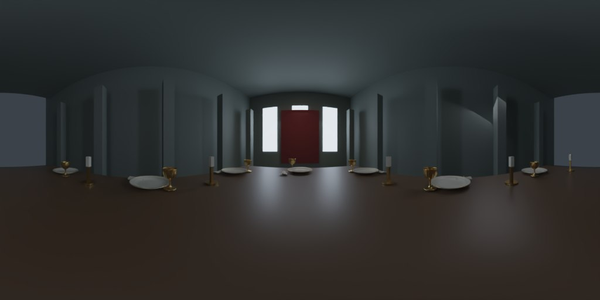
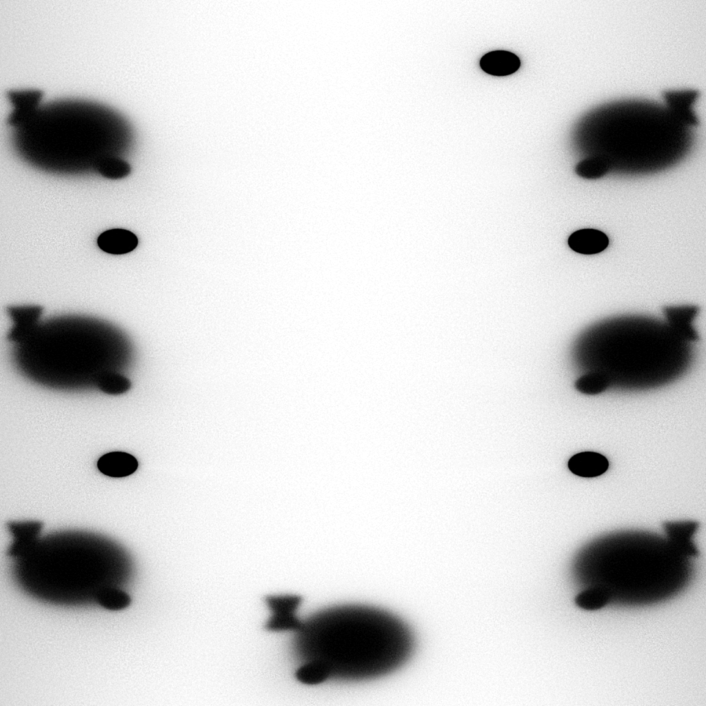

专用 HDR 环境、桌面间接光与接触阴影。由同尺寸宴厅代理场景烘焙，保留实时烛火。
状态：资源与代码检查通过；本轮浏览器自动化工具启动失败，实际截图、画面对比及帧率测量尚未完成。下图是 HDR 数据的显示预览，不是 Three.js 实时截图。

| 项目 | 本轮实现 |
|---|---|
| HDR 环境 | 1024×512，1.17 MiB，加载时 PMREM 预过滤 |
| 静态桌面光照 | 两张 1024×1024 线性 WebP，合计约 0.87 MiB |
| 材质 | 石材、木材、纸面与金属使用标准 PBR；布料、瓷釉、玻璃保留高级效果 |
| 实时开销 | 增加桌面贴图采样；不新增实时阴影灯、动态环境捕获或光追 |
| 性能实测 | 待验证；不沿用第四稿 FPS |

器皿位置固定时适用。移动器物后需要重烘焙，当前只有 Blender 器物版使用这些烘焙图。